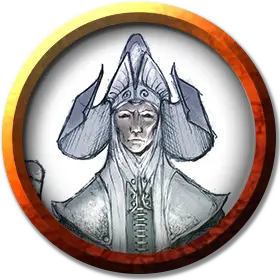

Аббат
The Abbot
Средний Небожитель, законно-злой, именной НИП

Класс Доспеха 17 (природный доспех)
Хиты 136 (16к8 + 64)
Скорость 30 футов, летая 90 футов
| мод | спас | ||
|---|---|---|---|
| СИЛ | 18 | +4 | +4 |
| ЛОВ | 18 | +4 | +4 |
| ТЕЛ | 18 | +4 | +4 |
| мод | спас | ||
|---|---|---|---|
| ИНТ | 17 | +3 | +3 |
| МДР | 20 | +5 | +9 |
| ХАР | 20 | +5 | +9 |
Навыки Восприятие +9, Проницательность +9
Сопротивление урону излучение; дробящий, колющий, рубящий от немагических атак
Иммунитет к состояниям очарование, истощение, испуг
Чувства тёмное зрение 120 футов, пассивное Восприятие 19
Языки Все, Телепатия 120 фт.
Опасность 10 (5900 опыта)
Бонус мастерства +4
Особенности
Оружие ангела. Атаки оружием Аббата являются магическими. Если Аббат попадает любым оружием, оно причиняет дополнительный урон излучением 4к8 (уже включено в атаку).
Врождённое колдовство. Базовой характеристикой Аббата является Харизма (Сл спасброска от заклинания 17). Аббат может накладывать следующие заклинания, нуждаясь только в вербальных компонентах:
• Неограниченно: обнаружение зла и добра [detect evil and good]
• 1/день каждое: общение [commune], оживление [raise dead]
Сопротивление магии. Аббат совершает с преимуществом спасброски от заклинаний и прочих магических эффектов.
Черты Аббата.
Идеал. «Я хочу избавить Баровию от её болезни. Отдав дьяволу то, чего он жаждет, я принесу избавление ему и его земле.»
Привязанность. «Я люблю существ, которых создаю, включая моих прекрасных големов и полукровок.»
Слабость. «Я не подвержен пагубному влиянию. Моё сердце чисто, а намерения благородны и добры.»
Действия
Мультиатака. Аббат совершает две рукопашные атаки.
Булава. Рукопашная атака оружием: +8 к попаданию, досягаемость 5 футов, одна цель. Попадание: Дробящий урон 7 (1к6 + 4) плюс урон излучением 18 (4к8).
Целебное касание (3/день). Аббат прикасается к другому существу. Цель магическим образом восстанавливает 20 (4к8 + 2) хитов и избавляется от проклятий, болезней, отравлений, слепоты и глухоты.
Смена формы. Аббат магическим образом превращается в гуманоида или зверя, чей показатель опасности не превышает его собственный, или принимает свой истинный облик. Если Аббат умирает, он принимает свой истинный облик. Все снаряжение, которое он несет или носит, сливается с новым обликом или используется им (на выбор Аббата).
В новом облике Аббат сохраняет игровую статистику и способность говорить, но КД, режимы перемещения, Сила, Ловкость и специальные чувства заменяются теми, что есть у нового облика, и он получает все элементы статистики и умения (кроме классовых умений, легендарных действий и действий логова), которые есть у нового облика, но отсутствуют у него.
Описание
Аббат верит, что делает благие дела. Он сожалеет о том, что превратил Белвью в отвратительных полукровок, и считает, что их нужно держать в изоляции, чтобы сдержать их безумие. Он верит, что невеста Страда – ключ к снятию проклятья с окрестных земель. Безумного Аббата не переубедить на этот счет.
Аббат открыто делится своими взглядами, считая, что его решения основаны на наставлениях Утреннего Лорда. Если гости ведут себя дружелюбно, он проведет для них экскурсию по аббатству, но он станет враждебным при угрозах ему или его подопечным.
Нет существ в Баровии старше хозяина Аббатства Святой-Марковии в Крезке. Этот безымянный святой, которого другие называют Аббатом была приглашен в аббатство после смерти Святой Марковии от рук Страда. Он стремился восстановить аббатство после его развращения, но в итоге сам ему поддался.
Ангел во плоти. Аббат – дэв, что живет вот уже тысячелетие. Как правило он принимает образ невероятного красивого священника в возрасте двадцати-тридцати лет. Более ста лет назад, дэв был отправлен с Верхних Планов [Upper Planes] защищать наследие Святой Марковии. Он вновь открыл аббатство и начал лечить больных – как телом, так и духом. Тем самым он надеялся принести в Баровию так нужный здесь свет. Какое-то время это работало, но в итоге Темные Силы начали его развращать.
Несовершенство. Грехопадение Аббата началось с приходом в аббатство Бельвью – семейства врождённо больных проказой, ищущих спасения. Дэв избавил их от их болезни, деяние, которым он заработал их вечную признательность, но так и не смог избавить их от некоторых дефектов, полученных ими при рождении. В аббате взыграла гордыня и его поглотила одержимость желанием избавить несчастных Белвью от их наследственного несовершенства. Впрочем, у семейства Белвью было своё понимание того, что значит, быть совершенным. Они не хотели быть обычными людьми. Они хотели глаза как у кошек, крылья, чтоб летать, как у летучих мышей, силу мула и ловкость змеи. Вскоре, они взмолились о желании получить эти черты животных, и Аббат, сжалившись над ними, удовлетворил их безумные желания.
Входите, Василий ван Хольц. Ранние эксперименты Аббата оказались смертельными для подопытных, но Белвью настаивали на том, чтобы он продолжил свои попытки. Однажды, аббатство посетил один Баровийский лорд. Аббат немедленно понял, что этот человек был злом, но ван Хольц подчеркнул, что он лишь желает помочь. Он поделился с Аббатом запретным знанием, обнаруженным им в Янтарном Храме (глава 13), после чего помог Аббату превратить Белвью в полукровок – волшебную разновидность людей с животными чертами, как хорошими, так и плохими. Белвью были счастливы, хотя и сошли с ума. Лишь после этого ван Хольц открыл свою настоящую личность Страда фон Заровича. Каким-то образом дэв понял, что любые попытки убить Страда будут бесплодны – что древнее проклятие, лежащее на земле не даст вампиру окончательно умереть, по крайней мере не в Баровии.
Невеста Страда. Страд доверился Аббату, жалуясь на своё проклятие. Он сказал дэву, что он желает более всего на свете покинуть Баровию. Разыгранная им сцена завоевала расположение дэва и Аббат, став марионеткой в руках Страда, задался целью найти лекарство от «недуга» Страда. Аббат убеждён, что лекарство состоит в воссоединении Страда с его утерянной любовью, что снимет проклятие с Баровии. Аббат недавно завершил работу над големом из плоти в виде невесты, созданным из частей тел мёртвых женщин. Пока Белвью томятся в богадельне аббатства, сам Аббат даёт его созданию уроки этикета и дамских манер поведения, чтобы он мог «её» формально представить Страду и «она» смогла завоевать его любовь.
Страд не питает никакого интереса к голему-невесте, но ему доставляет удовольствие совращать бывшее когда-то ангелом существо и заставлять Аббата совершать всё больше порочных поступков.